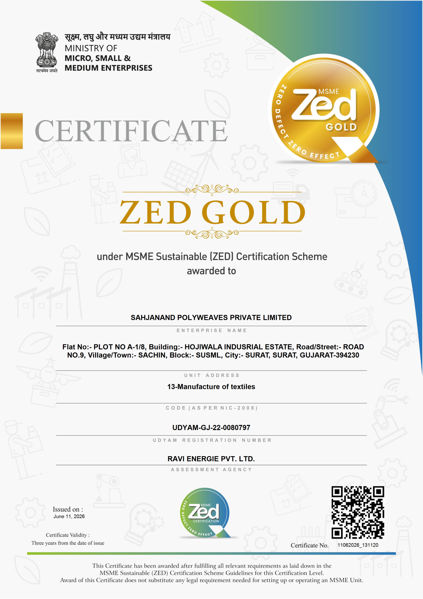
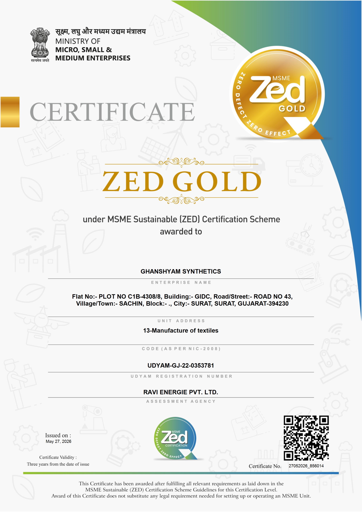

Pioneering Excellence in Textile Manufacturing & Industrial Solutions
Headquartered in Surat — India’s textile capital — Sahjanand commands world-class textile manufacturing and industrial engineering. Grounded in over three decades of trust, we engineer high-performance synthetic fabrics, premium weaves, and precision industrial infrastructure built to exacting standards.
Certified Excellence in Manufacturing & Quality Systems
Sahjanand manufacturing units have been officially awarded the prestigious ZED Gold Certification (Zero Defect, Zero Effect) by the Ministry of Micro, Small and Medium Enterprises (MSME), Government of India — acknowledging benchmark standards in quality manufacturing, operational safety, and environmental stewardship across Surat.

Sahjanand Polyweaves Private Limited

Ghanshyam Synthetics
Silken Sonnets
Surat’s Benchmark in Textile Manufacturing & Innovation
Explore our four core integrated operations in Surat — India’s textile capital. Click any department below to view comprehensive operational details, machinery, and production capacities with 100% in-house quality control and strict client confidentiality.
Weaving Sector (High-Speed Weaving Division)
High-volume, 24/7 modern waterjet, airjet, and electronic rapier weaving lines producing premium grey fabric rolls, micro-polyester apparel cloth, structured suiting, and industrial technical fabrics in Surat.
High-Speed Looms Floor
Continuous automated weaving operations running at optimum speeds with electronic let-off and digital take-up:
- Machinery: Waterjet, Airjet & Rapier Looms
- Operating RPM: 800 to 1,000+ Picks Per Minute
- Tension Control: Electronic Optical Feeder Systems
- Uptime: 24/7 Continuous Automated Weaving
Fabric Categories Manufactured
Broad portfolio of commercial apparel, suiting, and technical textiles manufactured with consistent warp/weft balance:
- Lightweight Fabrics: Chiffon, Georgette, Crepe, Satin
- Structured Textiles: Suiting, Twill, Dobby & Jacquard
- Lining Materials: High-Density Taffeta & Linings
- Width Capability: 44 inches to 72+ inches Broad
Quality & Defect Prevention
Zero-tolerance automated defect detection paired with physical laboratory testing of every roll:
- Sensors: Dual Electronic Optical Weft Detectors
- GSM Precision: ±2% Batch-to-Batch Consistency
- Inspection: 100% Illuminated 4-Point Verification
- Certifications: Standard Mill Dispatch Test Sheets
Four Specialized High-Speed Weaving Facilities
24/7 continuous waterjet, airjet, and rapier weaving lines producing premium grey fabric rolls, micro-polyester apparel, structured suiting, and industrial linings.
High-Speed Waterjet Weaving Bay
Surat Weaving Complex, GujaratHigh-RPM automated waterjet loom floor running continuous micro-polyester and synthetic grey cloth production with optical weft feelers.
- Operating Speed: 800 to 1,000+ Picks Per Minute
- Fabric Portfolio: Chiffon, Georgette, Crepe & Satin
- Daily Capacity: 30,000 Linear Meters/Day
Airjet Fabric Production Floor
Surat Weaving Complex, GujaratHigh-pressure pulsed airjet insertion lines engineered for high-density lining fabrics, technical cloth, and uniform-weight synthetic shirting.
- Machinery: Multi-Nozzle Airjet Looms
- Reed Widths: 44 inches to 72 inches Standard
- Yarn Insertion: Electronic Relay Nozzle Guidance
Electronic Rapier Weaving Floor
Surat Weaving Shed, GujaratHeavy-duty computerized flexible rapier heads engineered for structured weaves, dobby patterns, institutional suiting, and broad furnishings.
- Loom Widths: 180 cm to 360 cm Broad Widths
- Pick Density: Up to 120 Picks Per Inch (PPI)
- Weft Selector: Up to 8-Color Electronic Weft Selector
Roll Packaging & High-Volume Dispatch Hub
Surat Logistics Hub, GujaratAutomated continuous roll winding, length metering, barcoding, and heavy poly-wrapping prepared for direct delivery to dyeing mills and export processing houses.
- Roll Lengths: Continuous 500m to 1,000m Wrapped
- Verification: Digital Meterage Stamped
- Dispatch Timeline: Same-Day Surat Cluster Delivery
A Purpose-Led Enterprise Driven by Engineering Discipline and Trust.
Founded on the principle behind our name — ease, and the absolute trust that comes from it — Sahjanand has evolved into a premier industrial manufacturing enterprise. Operating across modern production facilities in Surat, Gujarat, we engineer high-performance synthetic fabrics, premium yarns, specialty chemicals, and global trade solutions built to exacting standards.
We work close to our manufacturing floor: our textile engineers, yarn technologists, chemical formulators, and plant supervisors are directly involved in every production batch to ensure complete consistency from filament processing and weaving to final dispatch.
Batch-Tested Quality at Every Stage of Manufacture.
Every single production batch across our four sectors is sampled, tested, and calibrated within our in-house quality laboratories. Backed by our Government of India MSME ZED Gold certification (Zero Defect, Zero Effect), comprehensive quality verification detailing tensile strength, denier uniformity, warp/weft tenacity, color fastness, and chemical safety accompanies all commercial dispatches.